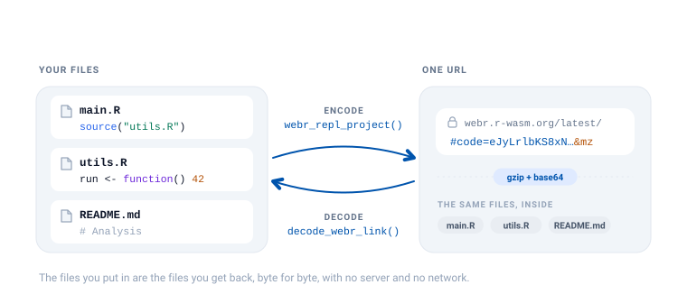
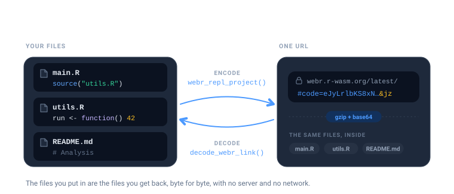
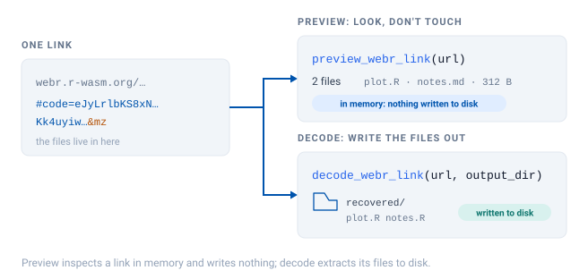
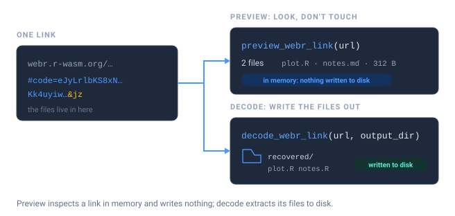
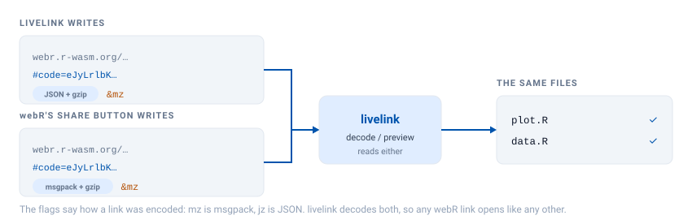
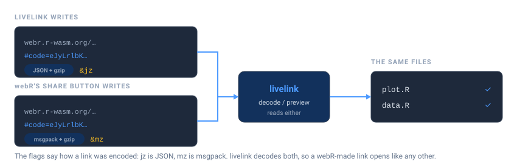

url <- as.character(webr_repl_link("hist(rnorm(100))", filename = "plot.R"))
preview <- preview_webr_link(url)
preview
#>
#> ── webR Link Preview ──
#>
#> URL:
#> <https://webr.r-wasm.org/latest/#code=eJyLrlbKS8xNVbJSKsjJL9ELUtJRKkgsyQDy9TPyc1P1y1OT4kuLU4v04dIlqRUlQOmMzOISjaK8%2FKJcDUMDA01NpdpYALyJGIs%3D&jz>
#>
#> Files: 1
#> Total size: 16 bytes
#> Version: "latest"
#> Encoding: "jz"
#>
#> 'plot.R' (16 bytes)
#>
#> Use print(preview, show_content = TRUE) to see file contentsA livelink URL is not a pointer to a file on a server. The files are the URL – compressed, encoded, and carried in the fragment after #. Nothing is uploaded anywhere, which is what makes these links work offline and forever.
That has a useful consequence: any link can be turned back into the files it came from, by anyone, with no network access.


Look before you leap
Someone sends you a link. Before you let it write anything to your disk, you can inspect it. There are two ways to open a link, and they differ in exactly one way: whether anything touches your filesystem.


preview_webr_link() decodes the URL in memory and tells you what is inside, without creating a single file.
The preview object carries the details, so you can query it rather than read it:
preview$total_files
#> [1] 1
preview$files_data[[1]]$name
#> [1] "plot.R"To see the actual code, ask for it:
print(preview, show_content = TRUE)
#>
#> ── webR Link Preview ──
#>
#> URL:
#> <https://webr.r-wasm.org/latest/#code=eJyLrlbKS8xNVbJSKsjJL9ELUtJRKkgsyQDy9TPyc1P1y1OT4kuLU4v04dIlqRUlQOmMzOISjaK8%2FKJcDUMDA01NpdpYALyJGIs%3D&jz>
#>
#> Files: 1
#> Total size: 16 bytes
#> Version: "latest"
#> Encoding: "jz"
#>
#> 'plot.R' (16 bytes)
#> hist(rnorm(100))This is the honest way to open a link from a stranger. You get to read the code before you decide whether to run it.
Extracting the files
Once you are satisfied, decode_webr_link() writes the files out.
out <- file.path(tempdir(), "recovered")
result <- decode_webr_link(url, output_dir = out)
#> Decompressing webR data...
#> Parsing file data...
#> Created directory: '/tmp/RtmprkcidO/recovered/webr_dbaaf593'
#> Decoding 1 file...
#> 'plot.R' (16 bytes)
#> ✔ Successfully decoded 1 file to '/tmp/RtmprkcidO/recovered/webr_dbaaf593'
result
#>
#> ── webR Decoded Files ──
#>
#> Source:
#> <https://webr.r-wasm.org/latest/#code=eJyLrlbKS8xNVbJSKsjJL9ELUtJRKkgsyQDy9TPyc1P1y1OT4kuLU4v04dIlqRUlQOmMzOISjaK8%2FKJcDUMDA01NpdpYALyJGIs%3D&jz>
#> Output: '/tmp/RtmprkcidO/recovered/webr_dbaaf593'
#>
#> Files (1):
#> 'plot.R' (16 bytes)
#>
#> Version: "latest"
#> Encoding: "jz"By default it writes into a subdirectory of your session’s temporary directory, so a stray call cannot litter your project. Pass output_dir when you want the files somewhere permanent:
decode_webr_link(url, output_dir = "~/analysis", create_subdir = FALSE)create_subdir = FALSE puts the files directly in output_dir instead of nesting them under a hash-named folder.
Existing files are never clobbered silently. If a file is already there, it is skipped and reported:
decode_webr_link(url, output_dir = out)
#> Decompressing webR data...
#> Parsing file data...
#> Decoding 1 file...
#> Warning: File already exists, skipping: 'plot.R'
#> ✔ Successfully decoded 0 files to '/tmp/RtmprkcidO/recovered/webr_dbaaf593'
#>
#>
#> ── webR Decoded Files ──
#>
#>
#>
#> Source:
#> <https://webr.r-wasm.org/latest/#code=eJyLrlbKS8xNVbJSKsjJL9ELUtJRKkgsyQDy9TPyc1P1y1OT4kuLU4v04dIlqRUlQOmMzOISjaK8%2FKJcDUMDA01NpdpYALyJGIs%3D&jz>
#>
#> Output: '/tmp/RtmprkcidO/recovered/webr_dbaaf593'
#>
#>
#>
#> No files were saved due to the following issues:
#>
#> ✖ 1 file already exists: plot.R
#>
#> ℹ Use `overwrite = TRUE` to replace existing files
#>
#>
#>
#> Version: "latest"
#>
#> Encoding: "jz"Pass overwrite = TRUE when replacing them is what you actually want.
The round trip is lossless
What goes in comes back out, byte for byte, including multi-file projects and non-ASCII text.
project <- list(
"main.R" = "source('utils.R')\nrun()",
"utils.R" = "run <- function() 42",
"README.md" = "# Analysis\n\nWith an accent: café"
)
link <- webr_repl_project(project)
recovered_dir <- file.path(tempdir(), "roundtrip")
invisible(decode_webr_link(as.character(link), output_dir = recovered_dir))
#> Decompressing webR data...
#> Parsing file data...
#> Created directory: '/tmp/RtmprkcidO/roundtrip/webr_27866f36'
#> Decoding 3 files...
#> 'main.R' (23 bytes)
#> 'utils.R' (20 bytes)
#> 'README.md' (33 bytes)
#> ✔ Successfully decoded 3 files to '/tmp/RtmprkcidO/roundtrip/webr_27866f36'
files <- list.files(recovered_dir, recursive = TRUE, full.names = TRUE)
recovered <- setNames(
lapply(files, function(f) paste(readLines(f, warn = FALSE), collapse = "\n")),
basename(files)
)
identical(recovered[sort(names(recovered))], project[sort(names(project))])
#> [1] TRUEShinylive links decode too
The same two functions exist for Shiny apps, and they work the same way.
app_url <- as.character(shinylive_r_link("library(shiny)\nshinyApp(fluidPage(), function(i, o) {})"))
preview_shinylive_link(app_url)
#>
#> ── Shinylive R Preview ──
#>
#> Source:
#> <https://shinylive.io/r/editor/#code=NobwRAdghgtgpmAXGKAHVA6ASmANGAYwHsIAXOMpMAGwEsAjAJykYE8AKAZwAtaJWAlAB0IPPqwCC6dgDNqAV1oATAApQA5nHYDcAAhnyIBUrRLtaeogN0gAvgLxhSrVAmTkAHqTC2AukA>
#>
#> Files: 1
#> Total size: 55 bytes
#> Engine: "R"
#> Mode: "editor"
#>
#> 'app.R' (text, 55 bytes)
#>
#> Use print(preview, show_content = TRUE) to see file contents
decode_shinylive_link(app_url, output_dir = file.path(tempdir(), "app"))
#> Decompressing Shinylive data...
#> Parsing file data...
#> Created directory: '/tmp/RtmprkcidO/app/shinylive_6f92fb6e'
#> Decoding 1 file...
#> 'app.R' (text, 55 bytes)
#> ✔ Successfully decoded 1 file to '/tmp/RtmprkcidO/app/shinylive_6f92fb6e'
#>
#>
#> ── Shinylive R Decoded Files ──
#>
#>
#>
#> Source:
#> <https://shinylive.io/r/editor/#code=NobwRAdghgtgpmAXGKAHVA6ASmANGAYwHsIAXOMpMAGwEsAjAJykYE8AKAZwAtaJWAlAB0IPPqwCC6dgDNqAV1oATAApQA5nHYDcAAhnyIBUrRLtaeogN0gAvgLxhSrVAmTkAHqTC2AukA>
#>
#> Output: '/tmp/RtmprkcidO/app/shinylive_6f92fb6e'
#>
#>
#>
#> Files (1):
#>
#> 'app.R' (55 bytes)
#>
#>
#>
#> Total size: 55 bytes
#>
#> Mode: "editor"Python apps are no different. preview_shinylive_link() reports the engine, so you can tell what you are looking at before you extract it:
py_url <- as.character(shinylive_py_link("from shiny import App, ui"))
preview_shinylive_link(py_url)$engine
#> [1] "python"Many links at once
Both decoders accept a vector of URLs and return a batch object. This is the useful shape for grading a stack of student submissions, or auditing a set of links from a course page.
urls <- c(
as.character(webr_repl_link("plot(1:10)", filename = "one.R")),
as.character(webr_repl_link("hist(rnorm(50))", filename = "two.R"))
)
batch <- decode_webr_link(urls, output_dir = file.path(tempdir(), "batch"))
#> Processing 2 webR URLs...
#>
#>
#>
#> ── Processing URL 1/2: script_01
#>
#> Decompressing webR data...
#> Parsing file data...
#> Created directory: '/tmp/RtmprkcidO/batch/script_01'
#> Decoding 1 file...
#> 'one.R' (10 bytes)
#> ✔ Successfully decoded 1 file to '/tmp/RtmprkcidO/batch/script_01'
#>
#>
#>
#> ── Processing URL 2/2: script_02
#>
#> Decompressing webR data...
#> Parsing file data...
#> Created directory: '/tmp/RtmprkcidO/batch/script_02'
#> Decoding 1 file...
#> 'two.R' (15 bytes)
#> ✔ Successfully decoded 1 file to '/tmp/RtmprkcidO/batch/script_02'
#>
#> ✔ Successfully processed 2/2 URLs
batch
#>
#> ── webR Decoded Batch ──
#>
#> Base directory: '/tmp/RtmprkcidO/batch'
#> Total URLs: 2
#>
#> Successfully processed 2 URLs:
#> 'script_01': 1 file
#> '/tmp/RtmprkcidO/batch/script_01'
#>
#> 'script_02': 1 file
#> '/tmp/RtmprkcidO/batch/script_02'
#>
#> Summary: 2 total files saved across 2 URLsEach URL gets its own subdirectory, so submissions cannot overwrite one another.
Reading links livelink did not create
webR’s own share dialog encodes files with msgpack, not JSON, and livelink writes JSON. The flags at the end of a URL say which is which. jz is JSON + gzip, mz is msgpack + gzip, and a means autorun.


livelink reads all of them. A link produced by webR itself decodes exactly like one produced here, and you do not have to know or care which tool made it.
Getting just the URL
Every object livelink returns (links, projects, previews, decoded results) answers to repl_urls():
repl_urls(preview)
#> [1] "https://webr.r-wasm.org/latest/#code=eJyLrlbKS8xNVbJSKsjJL9ELUtJRKkgsyQDy9TPyc1P1y1OT4kuLU4v04dIlqRUlQOmMzOISjaK8%2FKJcDUMDA01NpdpYALyJGIs%3D&jz"
repl_urls(batch)
#> [1] "https://webr.r-wasm.org/latest/#code=eJyLrlbKS8xNVbJSys9L1QtS0lEqSCzJAHL1M%2FJzU%2FXLU5PiS4tTi%2FRhsiWpFSVA2YKc%2FBINQytDA02l2lgA7HMVVA%3D%3D&jz"
#> [2] "https://webr.r-wasm.org/latest/#code=eJyLrlbKS8xNVbJSKinP1wtS0lEqSCzJAHL1M%2FJzU%2FXLU5PiS4tTi%2FRhsiWpFSVA2YzM4hKNorz8olwNUwNNTaXaWABtIBeV&jz"which is handy when you want to write links out to a file, or drop them into a document, without unpicking the object.